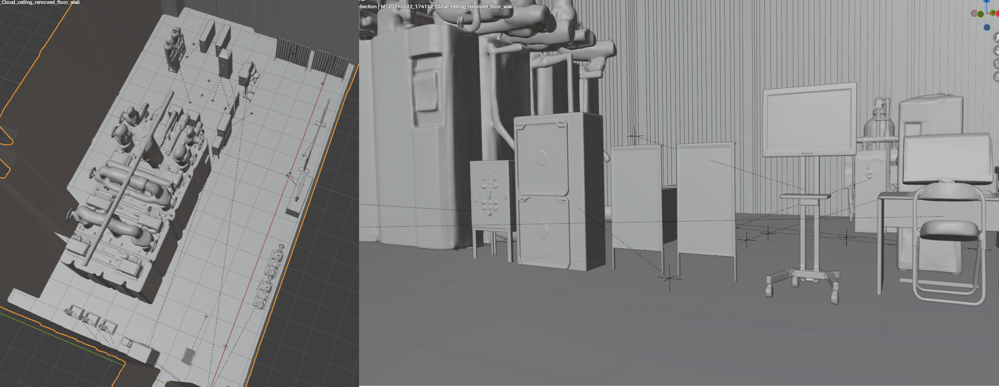
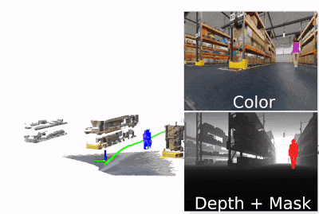
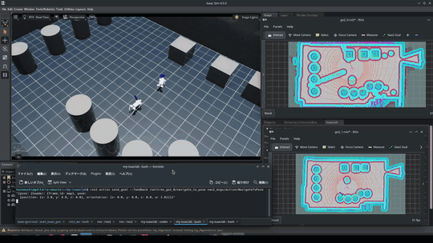
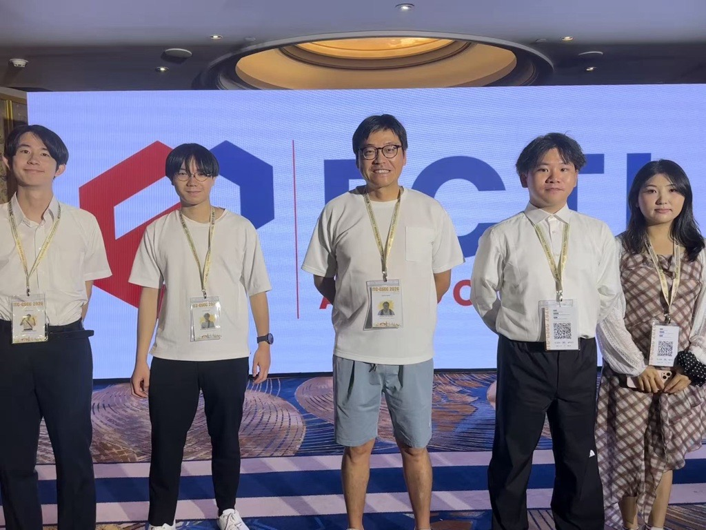
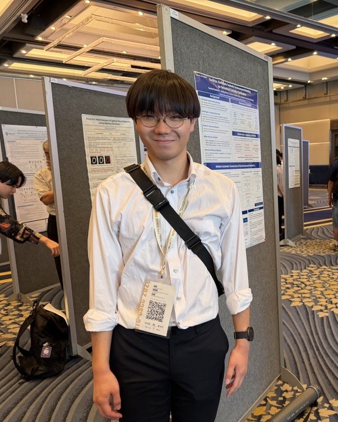
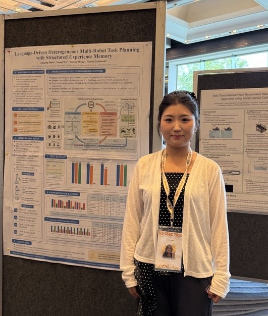

Industrial AI cannot rely on trial-and-error in the field
Real sites change, robot failures are costly, and pure LLM control is difficult to verify before deployment.

Ehime University Computer Science Lab · Taiyo Yuden · Mirabot
Industrial robots still struggle with changing factories, unsafe trial-and-error, and hard-to-verify AI plans. We position digital twins as the training, verification, and feedback layer for AI-native industrial robot systems.
We target factories, shipyards, boiler rooms, and inspection sites where robot testing is expensive, risky, and environment-specific. The project builds a closed-loop Physical AI platform that models the site, verifies multi-robot plans, deploys to real robots, and feeds field changes back into simulation.
Real sites change, robot failures are costly, and pure LLM control is difficult to verify before deployment.
Real-to-Sim, Prime/Slave agents, Sim-to-Real, and Sim-to-Real-to-Sim are treated as one industrial robot intelligence loop.
The goal is to let robots understand work sites, plan safely, execute tasks, and continuously update the digital twin from field evidence.
HIME brings our work on AI agents, autonomous navigation, and physical robot systems together in a laboratory-developed platform.

Convert real industrial spaces, objects, dimensions, and layouts into simulation-ready assets.

Use Prime Agent and Slave Agent architecture to plan, schedule, verify, and execute robot tasks.

Train and validate navigation, inspection, and manipulation behavior before physical deployment.

Sense field changes, evaluate robot behavior, and incrementally update the virtual environment.
The Real-to-Sim stream builds reusable digital-twin assets: static spaces, object-level 3D models, physical attributes, scale correction, and automatic layout generation.
Our published ITC-CSCC 2026 work converts a single photograph into reusable 3D assets and an initial layout. We are extending the pipeline to Odin1 LiDAR + RGB + IMU, moving from dimension estimation to measured scale constraints.

.gif)
The industrial system uses a Prime Agent for global task planning, resource assignment, scheduling, and formal verification, while Slave Agents execute robot-local navigation, sensing, and manipulation.
The Prime Agent integrates natural-language task understanding with PDDL planning, PPLTL temporal logic, DAG parallelization, and model checking. The goal is not just to generate plans, but to verify that robot behavior satisfies task goals and industrial rules before execution.
Sim-to-Real connects trained and verified behaviors to Go2, robot arms, sensors, ROS 2/Nav2, Jetson edge computing, and inspection-management software.

The system already includes Go2 navigation, map/route visualization, waypoint management, scheduled inspection tasks, image acquisition in Isaac Sim, robot-arm introduction, Rviz connection, and showroom model import into Isaac Lab.
The final layer is Sim-to-Real-to-Sim: physical robots sense changes in the field, update object poses or generate new assets, and allow the Prime Agent to replan using the refreshed virtual environment.
The current design distinguishes moved, new, and disappeared objects. Moved objects update pose only; new objects trigger measurement, 3D generation or retrieval, and USD insertion; updated scenes are checked for collisions, overlaps, and blocked paths.
Real-to-Sim, AI-native agent system, Sim-to-Real, and Physical-Virtual interaction.
Odin1-based processing flow for recognition, measurement, 3D generation, correction, and attributes.
Formal-planning pipeline improved over the LLM-only baseline in evaluated tasks.
Multi-robot navigation execution has been checked in Isaac Sim as the next integration target.
The paper folder contains peer-facing outputs covering indoor reconstruction, Real-to-Sim asset generation, heterogeneous multi-robot task planning, and symbolic environment modeling for verification.
Shintaro Ono, Kerun Li, Tomoki Kuzuhara, Koji Kinoshita, Senling Wang, Hiroshi Takahashi
Open PDFKerun Li, Senling Wang, Shintaro Ono, Tomoki Kuzuhara, Hiroshi Kai, Hiroshi Takahashi
Open PDFJingjing Shen, Xiaoqi Wei, Mitsuaki Matsumoto, Senling Wang, Hiroshi Takahashi
Open PDFTomoki Kuzuhara, Senling Wang, Kerun Li, Shintaro Ono, Hiroshi Kai, Hiroshi Takahashi
Open PDFH100/RTX infrastructure, Isaac/Gazebo/Genesis environments, Go2 prototype, SLAM navigation, and initial multi-agent robot control.
Shipyard and boiler-room digital twins, Prime/Slave agent training, management app integration, and field sensing for sim-real feedback.
Multi-robot inspection, delivery, anomaly reporting, and digital-twin-driven replanning in real industrial sites.
The project is led by Ehime University researchers and developed with industrial partners who bring robot deployment context, field requirements, and implementation support.


Computer Science Lab, Graduate School of Science and Engineering
Industrial collaboration and robot-related deployment context
Robotics collaboration and physical AI implementation support
Project Director / Computer Systems
Prof. Hiroshi Takahashi is Vice President of Ehime University, an IEICE Fellow, and Project Director. His long-running research covers computer-system design and testing, VLSI fault testing and diagnosis, dependable and fault-tolerant computing, reconfigurable logic, and hardware security. In this project, he provides academic and systems leadership for integrating reliable computing, formal verification, digital twins, and industrial robotics.
Project Lead / Computer Systems
Dr. Senling Wang received his Ph.D. in Information Engineering from Kyushu Institute of Technology in 2014 and leads this project. His research spans dependable computer systems, VLSI testing and fault diagnosis, reconfigurable computing, hardware security, and machine-learning-assisted testing and reliability. Building on this systems background, he develops digital-twin and Physical AI platforms that connect environment modeling, verified AI-agent planning, robot simulation, and industrial field validation.

Embedded Systems / Real-to-Sim
Kerun Li is a second-year master's student in the Graduate School of Science and Engineering at Ehime University, specializing in embedded systems development. His work spans robot SLAM and navigation, computer vision, generative AI, and Real-to-Sim 3D scene reconstruction. As first author of the team's single-photograph Real-to-Sim pipeline, he develops methods that turn real observations into reusable 3D assets and physically plausible simulation scenes. He holds two utility model registrations, two registered designs, and one software copyright, with one invention patent application under examination. As an undergraduate, he was named an Outstanding Graduate of Zhejiang Province and received the Zhejiang Provincial Government Scholarship.
Real-to-Sim Scene Generation from a Single Photograph for Robot Simulation
Cybersecurity / Formal Verification
Tomoki Kuzuhara is a second-year master's student in the Graduate School of Science and Engineering at Ehime University, specializing in cybersecurity. He develops and verifies the Prime Agent and builds knowledge bases for industrial fields. As first author of Env2FSA, he studies visual grounding, PDDL-consistent symbolic environment modeling, and counterexample-guided formal verification of robot behavior controllers.
Env2FSA: Automatic Symbolic Environment Modeling for Behavioral Controller VerificationImage Processing / Environment Modeling
Shintaro Ono is a second-year master's student in the Graduate School of Science and Engineering at Ehime University, specializing in image processing. His project work covers static spatial model generation, analog meter digitization, and in-field change detection. As first author of a comparative study of indoor reconstruction methods, he evaluates BEV, heightmap, and plane-based approaches for generating simulation-ready static geometry from LiDAR point clouds.
Comparative Analysis of Indoor Reconstruction Methods for Digital Twin Generation
Planning Optimization / Multi-Robot Systems
Jingjing Shen is a second-year master's student in the Graduate School of Science and Engineering at Ehime University, specializing in planning optimization. She designs and validates action-planning agents. As first author of the team's language-driven heterogeneous multi-robot planning framework, she studies natural-language task decomposition, capability-aware team formation and allocation, structured experience memory, and feedback-driven plan repair.
Language-Driven Heterogeneous Multi-Robot Task Planning with Structured Experience MemoryWe are looking for partners interested in industrial digital twins, AI-native factory systems, field robotics, multi-robot planning, sim-to-real validation, and physical-virtual interaction.
Contact the labAggregate page views and country-level reach since analytics was enabled on 24 July 2026.
Explore aggregate visits by country and page.